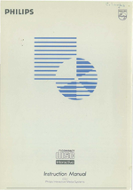
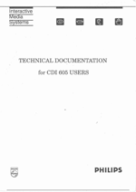
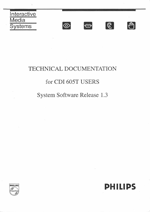
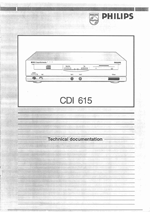
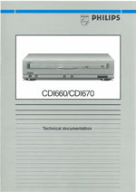

CD-i Technical Documentation
Here you will find technical documentation manuals for various professional and authoring CD-i player models in Portable Document Format, you need Adobe Acrobat Reader to view or print them.
CD-I Instruction Manual
Philips Interactive Media Systems - September, 1988
This instruction manual describes an early CD-I sample production system,
the predecessor of what would later become the CDI 180/181/182 authoring player.
The document contains chapters on the system as a whole,
its three comprising units
CD-I player, multi media controller and expansion module,
as well as the mouse, graphic control and memory card peripherals.
Specifications of communication ports, input devices and
extensions are included.
Download cdi_insman.pdf (7.86 MB, 102 page PDF)
|
 |
Technical Documentation for CDI 605 Users
Philips Interactive Media Systems - June 22, 1992
This is the technical documentation for the 6XX series of CD-I professional players from Philips.
This documentation is especially made
for CD-I 605 users to be able to support business development.
Information about the startup of the system, such as the Configuration Status Descriptor and the
SYSGO process, are available here. Specifications of communication ports, input devices and
extensions are also added.
Download cdi605_techdoc.pdf (8.43 MB, 94 page PDF)
|
 |
Technical Documentation for CDI 605T Users,
System Software Release 1.3
Philips Interactive Media Systems - October 18, 1993
This is the technical documentation for the 605T series of CD-i professional players from Philips.
This documentation is especially made
to be able to support business development.
Information about the startup of the system, such as the Configuration Status Descriptor and the
SYSGO process, are available here. Specifications of communication ports, input devices and
extensions are also added.
Download cdi605t_techdoc_r13.pdf (9.46 MB, 100 page PDF)
|
 |
CDI 615 Technical documentation
Philips Interactive Media Systems - 1996
This is the technical documentation for the CDI 615, one of the
professional CD-i players from Philips. This documentation is
especially made to be able to support business development.
Information about the startup of the system, communication
ports, input devices and extensions are available here.
Download cdi615_techdoc.pdf (3.38 MB, 24 page PDF)
|
 |
CDI 660 / CDI 670 Technical documentation
Philips Interactive Media Systems - 1998
This is the technical documentation for the CDI660 and CDI670
serie of CD-i players. This documentation is especially made to
be able to support development of sophisticated CD-i
applications.
As this documentation describes different player models, some
interfaces and related funtion descriptions are not available on
alle models.
Download cdi660_cdi670_techdoc.pdf (3.70 MB, 28 page PDF)
|
 |
|

{kind=link}
{kind=link}
{kind=link}
{kind=link}
{kind=link}